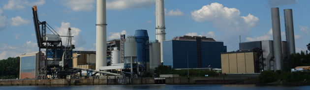
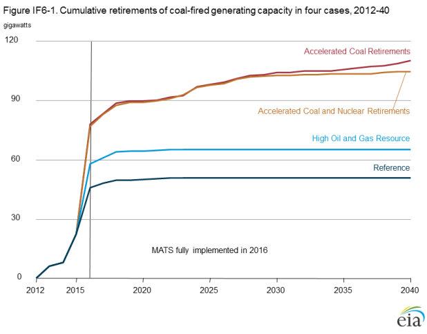
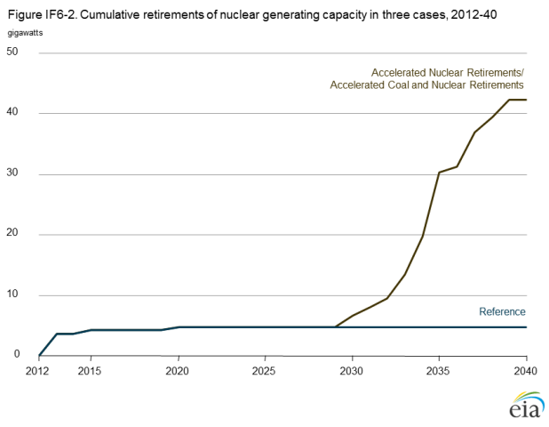
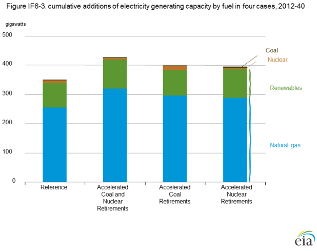
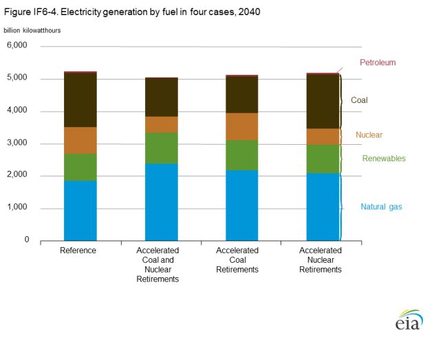
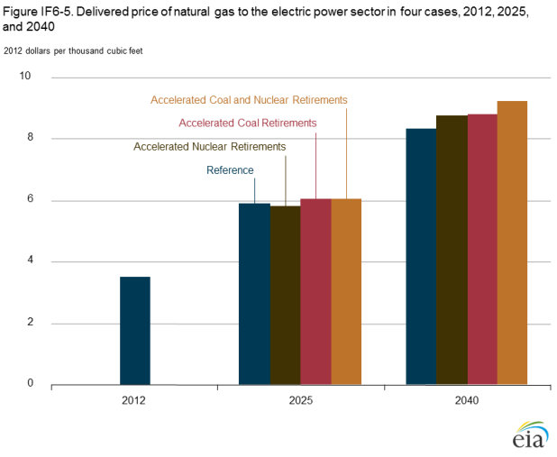
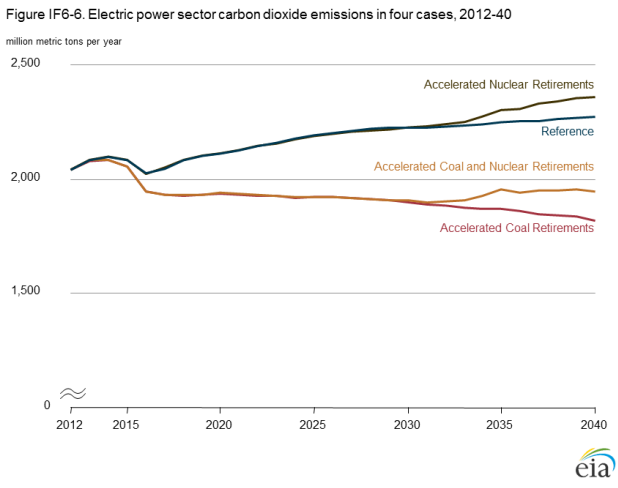
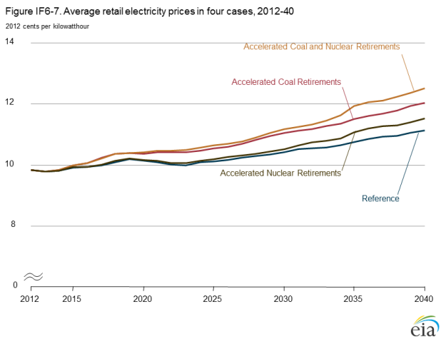

Implications of accelerated power plant retirements
Release Date: 4/28/14
In 2012, coal-fired and nuclear power plants together provided 56% of the electricity generated in the United States. The role of these technologies in the U.S. generation mix has been changing since 2009, as both low natural gas prices and slower growth of electricity demand have altered their competitiveness relative to other fuels. Many coal-fired plants also must comply with requirements of the Mercury and Air Toxics Standards (MATS) and other environmental regulations. Some of the challenges faced by coal-fired and nuclear generators, and the implications for electricity markets if the plants are retired in significant numbers, are analyzed in this discussion.
Of the total installed 310 gigawatts (GW) of coal-fired generating capacity available at the end of 2012, 50 GW, or 16%, is projected to be retired by 2020 in the AEO2014 Reference case. Despite those projected retirements, coal continues to account for the largest share of the electricity generation mix through 2034, after which it is overtaken by natural gas. However, throughout the projection the coal share of total generation remains significantly below its 49% share in 2007, when coal set its annual generation record.
In 2012 and 2013, operators of five nuclear power reactors representing 4.2 GW of capacity announced plans to retire the reactors by 2015. Four of the reactors—San Onofre 2 and 3, Kewaunee, and Crystal River—already have ended nuclear power production, and the fifth, Vermont Yankee, is expected to end generation by the end of 2014 [1]. In addition, the Oyster Creek plant is expected to conclude operation in 2019 [2]. These are the first retirements of U.S. nuclear power plants since Millstone Unit 1 was retired in 1998. Retirements often are the result of unique circumstances, but some owners of nuclear power plants have voiced concerns about the profitability of their units, sparking discussion of possible additional nuclear retirements [3]. In order to evaluate the impacts of potential retirements beyond those in the Reference case, AEO2014 includes several alternative cases with economic assumptions that make it less likely that existing coal and nuclear power plants will be used for generation.
Factors that lead to power plant retirements
Power plant owners generally make the decision to retire plants when their expected costs exceed their expected revenues over the future life of the plants [4]. Costs incurred by power plants can include large capital projects, such as installation of flue gas desulfurization (FGD) systems or scrubbers on coal plants, increased operating costs, or higher fuel costs. Revenues are received from energy sales or capacity payments in wholesale electricity markets in regions of the country with competitive wholesale markets, or from cost-recovery mechanisms in regions with vertically integrated utilities subject to rate regulations [5].
Recent trends in the electric power industry have resulted in both declining revenues and increased operating costs for coal
plants. Because natural gas often is the marginal fuel and thus sets prices in Regional Transmission Organization (RTO) markets,
and natural gas influences wholesale electricity prices in non-RTO markets, the decline in natural gas prices beginning in 2008
tends to reduce electricity prices and the payments received by all generators for the electricity they produce. Lower natural gas
prices also improve the competitiveness of natural gas combined-cycle (NGCC) power plants relative to coal-fired plants. When
lower natural gas prices drive the cost of generating electricity from an NGCC plant below that of a nearby coal-fired plant, the
coal plant is dispatched, or operated, less often and earns less revenue [6].
Slow growth of electricity demand in recent years has resulted in fewer high-cost marginal generators being dispatched. In regions with excess generating capacity, plants with relatively high variable operating costs may not be dispatched frequently enough to produce the revenue needed to cover their costs [7], making them candidates for retirement. Although the average price of coal delivered to the electric power sector declined in both 2012 and 2013, it rose by more than 4% per year from 2007 to 2011, and the resulting increase in operational costs for coal-fired power plants reinforced the impacts of lower demand and more competitive natural gas prices.
When faced with declining profitability, plant owners may choose to retire their units rather than make additional investments to keep them operating. In the AEO2014 Reference case, all coal-fired plants are required to have either a scrubber or a dry sorbent injection (DSI) system combined with a fabric filter in order to continue operating in 2016 [8] and later years. As of the end of 2012, 64% of the U.S. fleet of coal-fired generators was compliant with this requirement. The remaining plant owners are in the process of deciding whether to retrofit or retire their plants [9].
The outlook for nuclear power also has been altered by the changing conditions in U.S. electricity markets. Nuclear power plants have lower fuel costs than either coal- or natural gas-fired plants, translating to lower variable operating costs and ensuring that they are dispatched when available. The spread between the price of electricity and the fuel cost for nuclear plants is often referred to as the quark spread. Nuclear power plant owners in wholesale markets rely on sufficient quark spreads to cover nonfuel operations, maintenance, and any new capital expenses associated with the plants to provide a return on their investment. Lower wholesale electricity prices have reduced quark spreads for all nuclear power plants, especially those with increasing operations and maintenance (O&M) costs or capital addition costs.
The AEO2014 Reference case assumes an additional 6 GW of generic nuclear retirements from 2012 to 2019, beyond the six reactor retirements already announced (a total that includes the Oyster Creek plant), as higher-cost units face continued economic challenges. Those projected retirements are represented by derating of existing capacity for plants in vulnerable regions, not by retiring any specific plants. Higher natural gas prices in the Reference case after 2020 support the continued operation of the U.S. nuclear fleet and limit retirements from 2020 through 2040.
Accelerated retirement cases
AEO2014 includes several cases designed to explore the effects of alternative assumptions that change projected natural gas prices or electricity demand, or assigns a value to carbon dioxide (CO2) emissions as a proxy for possible future policies to mitigate greenhouse gas emissions. However, those cases have impacts throughout the energy system and the economy, which makes it difficult to measure the independent effects of significant coal and nuclear capacity retirements. In order to isolate the effects of additional retirements on the energy system, several cases were developed by incorporating assumptions that directly accelerate retirements of coal-fired and nuclear power plants.
Accelerated Coal Retirements case
The AEO2014 High Coal Cost case assumes a decrease in coal mine productivity and an increase in coal transportation costs, causing coal prices to rise to a level 68% above those in the Reference case in 2040. In the Reference and High Coal Cost cases, real O&M costs are flat, which is consistent with long-term historical trends. However, as coal plants age, higher O&M costs may also become a concern because replacement parts and upgrades to plant equipment could be required to keep them operating effectively. In the Accelerated Coal Retirements case, the assumptions of the High Coal Cost case are combined with an assumed 3% annual increase in real O&M costs for coal-fired power plants from 2012 through 2040, with the increase intended to represent the high end of potential future O&M costs. The higher fuel prices and O&M costs in the Accelerated Coal Retirements case serve as proxies for any combination of factors that would produce a higher rate of coal plant retirements.
Accelerated Nuclear Retirements case
The Nuclear Regulatory Commission (NRC) has the authority to issue initial operating licenses for commercial nuclear power plants for a period of 40 years and then to extend them in 20-year increments. The NRC has already approved initial 20-year license extensions for more than 70% of the nuclear fleet, and the AEO2014 Reference case assumes that each plant will receive a first license extension unless its planned retirement has specifically been reported. The nuclear power industry currently is developing strategies to submit license applications for additional 20-year life extensions that would allow plants to continue operating beyond 60 years. The AEO2014 Reference case assumes that plants reaching 60 years of age between 2030 and 2040 will be granted a second life extension.
Nuclear power plants operate as baseload capacity. Although they are expensive to build and maintain, they have relatively low variable operating costs, which ensures that they are dispatched when available. While not affecting their dispatch order, increases in nonfuel O&M costs can have negative effects on the economics of nuclear power plants through lower profit margins. To avoid retirement for economic reasons, a plant must maintain a positive net present value over its operating lifetime. As with coal plants, annual O&M costs for nuclear power plants remain flat in the AEO2014 Reference case. However, recent data suggest that O&M costs for nuclear plants rose at an average annual rate of 4% over the 2008-12 period [10].
The Accelerated Nuclear Retirements case assumes that O&M costs for nuclear power plants grow by 3% per year through 2040; that all nuclear plants not retired for economic reasons are retired after 60 years of operation; and that no additional nuclear power plants are built after the 5.5 GW of capacity currently under construction is completed. This case reflects uncertainty regarding actions and costs associated with continued operation of the existing nuclear fleet.
Accelerated Coal and Nuclear Retirements case
Large-scale simultaneous retirements of both coal-fired and nuclear capacity could have a significant effect on the electric power system. In order to assess that potential effect, the AEO2014 Accelerated Coal and Nuclear Retirements case combines the assumptions of the Accelerated Coal Retirements case and the Accelerated Nuclear Retirements case.
Results
Retirements
In the Accelerated Coal Retirements case, 110 GW of capacity, or 117% more than in the Reference case, is retired by 2040 (Figure IF6-1). In the Accelerated Coal and Nuclear Retirements case, coal retirement levels are similar to those in the Accelerated Coal Retirements case through 2030, with a slight leveling off toward the end of the projection, when some coal-fired capacity is needed to make up for the lost nuclear capacity.

figure data
In the Accelerated Nuclear Retirements case, 42 GW of nuclear capacity is retired through 2040 (Figure IF6-2). However, other than retirements early in the projection, there is no significant reduction in nuclear capacity before the plants begin to reach their 60th year of operation, in 2029. The same retirement trajectory is repeated in the Accelerated Coal and Nuclear Retirements case.
There is no incremental increase in nuclear retirements in the Accelerated Nuclear Retirements, despite higher O&M costs.
However, incremental retirements do occur in the Low Nuclear case, discussed in the Market Trends section of the AEO2014.
The Low Nuclear case uses the same assumptions as the Accelerated Nuclear Retirements case, but also includes the resource
assumptions from the High Oil and Gas Resource case that result in lower natural gas prices than in the Reference case. As a
result, economic retirements of nuclear power plants that have not operated for 60 years do occur in the last decade of the
projection in the Low Nuclear case, with nuclear capacity falling to 35 GW below the levels in the Accelerated Coal and Nuclear Retirements case.
figure data
Capacity additions
In order to replace capacity that is retired in the accelerated retirement cases, more total capacity (including capacity in the
electric power sector, combined heat and power, and capacity in the end-use sectors) is added than in the Reference case.
The new capacity mix consists almost entirely of natural gas and renewable energy sources (Figure IF6-3). Natural gas-fired
combined-cycle units are favored because of their low fuel prices and relatively moderate capital costs.
figure data
Generation fuel mix
As existing coal and nuclear plants are retired, natural gas
and renewables gain increasing shares of the generation mix
(Figure IF6-4). The strength of this trend depends on how
much nuclear and coal-fired capacity is retired. 
figure data
Coal-fired generation in 2040 is lowest in the Accelerated Coal Retirements case, which results in the greatest total loss of coal-fired capacity. In all AEO2014 cases, including the Reference case, available coal-fired capacity operates as baseload generation throughout the projection. Therefore, removing coal capacity results in lower overall levels of generation. Coal-fired electricity generation in 2040 is 1% higher in the Accelerated Nuclear Retirements case than in the Reference case as a result of a small increase in coal-fired capacity installed at the end of the projection period.
Nuclear power plants also consistently operate as baseload generation, and their total generation varies with changes in capacity. In the Accelerated Nuclear Retirements and Accelerated Coal and Nuclear Retirements cases, nuclear generation in 2040 is 40% lower than in the Reference case. In the Accelerated Coal Retirements case, nuclear electricity generation is 2% above the Reference case level in 2040.
Natural gas prices
In all the AEO2014 accelerated retirement cases, natural gas prices are higher in most years than in the Reference case as retirements
of existing coal and nuclear capacity lead to both increased use of existing natural gas-fired plants and the development of new
plants. The alternative cases with the largest increases in natural gas-fired generation also have the largest price increases. For
example, the price of natural gas delivered to the electric power sector in 2040 in the Accelerated Coal and Nuclear Retirements
case is 11% higher than the Reference case price (Figure IF6-5) [11].
figure data
Carbon dioxide emissions in the electric power sector
Coal and natural gas are the primary sources of CO2 emissions from the electric power sector. Coal is the most significant contributor, emitting more than twice as much CO2 per megawatthour (mWh) as a combined-cycle plant fueled by natural gas. Generation using nuclear power and renewables does not emit CO2.
Because of the high CO2 intensity of coal, scenarios that result in less coal-fired electricity generation also result in the most
significant emissions reductions. Total electric power sector CO2 emissions in the Accelerated Coal Retirements case are 20%
below those in the Reference case in 2040 (Figure IF6-6). Emissions are slightly higher in the Accelerated Coal and Nuclear
Retirements case, because some nuclear power generation is replaced by gas-fired generation; however, the effect of the coal-fired
capacity retirements still keeps emissions 14% below the Reference case level in 2040. In the Accelerated Nuclear Retirements case, nuclear generation is 328 mWh below the Reference case level in 2040, while electric power sector CO2 emissions are 85
million metric tons higher, reflecting an average increase of 0.26 metric tons CO2 per mWh reduction in nuclear generation across
the two scenarios. The estimated increase in CO2 emissions per mWh of nuclear generation reduced, which is slightly below the
estimated increase in CO2 emissions per additional mWh of generation from advanced combined-cycle plants burning natural
gas, reflects replacement generation from natural gas and renewables, together with some reduction in overall electricity demand
as a result of higher end-user prices.
figure data
Retail electricity prices
Retail electricity prices vary in the accelerated retirement cases, because natural gas prices are a key determinant of wholesale
electricity prices, which in turn are a significant component of retail electricity prices. Accordingly, the cases with the highest
delivered natural gas prices also show the highest retail electricity prices (Figure IF6-7). In 2040, real retail electricity prices in
the Accelerated Coal and Nuclear Retirements case are 12% higher than those in the Reference case.
figure data
Conclusions
Accelerated retirements of coal-fired and nuclear electricity generation capacity would cause natural gas and renewables to gain an increased share in the nation’s electricity generation mix. Natural gas is most often the lowest-cost option for replacement capacity, while renewable generation grows, spurred by the increased economic competitiveness of solar and wind technologies toward the end of the projection period. The rising use of natural gas in the electric power sector results in price increases for both natural gas and electricity in all sectors relative to the Reference case (Table IF6-1).
| Year and case | Average delivered natural gas
price to power sector (2012 dollars per million Btu) |
Retail electricity price (2012 cents per kilowatthour) |
Electric power sector carbon
dioxide emissions (million metric tons) |
|---|---|---|---|
| 2012 | 3.44 | 9.8 | 2,039 |
| 2025 | |||
| Reference | 5.75 | 10.1 | 2,194 |
| Accelerated Coal Retirements | 5.91 | 10.5 | 1,925 |
| Accelerated Nuclear Retirements |
5.69 | 10.2 | 2,188 |
| Accelerated Coal and Nuclear Retirements | 5.92 | 10.6 | 1,923 |
| 2040 | |||
| Reference | 8.16 | 11.1 | 2,271 |
| Accelerated Coal Retirements | 8.60 | 12.0 | 1,821 |
| Accelerated Nuclear Retirements |
8.57 | 11.5 | 2,356 |
| Accelerated Coal and Nuclear Retirements | 9.03 | 12.5 | 1,946 |
| Average delivered natural gas prices, electricity prices, and carbon dioxide emissions in four cases, 2012, 2025, and 2040. History: U.S. Energy Information Administration, Monthly Energy Review September 2013, DOE/EIA-0035 (2013/09) (Washington, DC, September 2013). Projections: AEO2014 National Energy Modeling System, runs REF2014.D102413A, HCLONUC.D012314A, HCCSTOM.D012314A, and LOWNUC14.D012314B. |
Endnotes
- Entergy, "Entergy to close, decommission Vermont Yankee" (Press Release, August 27, 2013; accessed March 25, 2014), http://www.entergy.com/news_room/newsrelease.aspx?NR_ID=2769.
- Exelon Corporation, "Exelon to retire Oyster Creek generating station in 2019" (Press Release, December 8, 2010; accessed March 25, 2014), http://www.exeloncorp.com/newsroom/pr_20101208_Nuclear_OysterCreekRetirement.aspx.
- M. Wallace and G.D. Banks, Restoring U.S. Leadership in Nuclear Energy (Center for Strategic & International Studies, Washington, DC, June 2013), http://csis.org/publication/restoring-us-leadership-nuclear-energy.
- The U.S. Energy Information Administration analysis assumes competitive economics for electric power capacity, in which variable costs determine dispatch, and fixed costs must also be paid by electric sales revenue to continue operation over the long term.
- Capacity payments provide units with revenue for being available to run in order to ensure reliability. Capacity payments can account for a significant portion of revenue for peak load plants, which do not run often and require financial incentives to remain available for dispatch.
- U.S. Energy Information Administration, "Dark spreads measure returns over fuel costs of coal-fired generation," Today In Energy (February 20, 2013), http://www.eia.gov/todayinenergy/detail.cfm?id=10051.
- U.S. Energy Information Administration, "Electric generator dispatch depends on system demand and the relative cost of operation," Today In Energy (August 17, 2012), http://www.eia.gov/todayinenergy/detail.cfm?id=7590.
- U.S. Energy Information Administration, "Assumptions to AEO2014: Electricity Market Module" (forthcoming), http://www.eia.gov/outlooks/aeo/assumptions/.
- S. Ferris, "Hatfield’s Ferry Power Station quietly closes for good," Herald Standard (Uniontown, PA, October 20, 2013), http://www.heraldstandard.com/new_today/hatfield-s-ferry-power-station-quietly-closes-for-good/article_cd0133e1-9adb-58c2-8f8d-66769de34835.html. Installing control equipment does not guarantee that a plant will remain economical to continue operating. Retirement of the Hatsfield's Ferry power station in Pennsylvania was announced after installation of a $650 million FGD scrubber system in 2009. However, in the AEO2014 Reference case most coal-fired power plants continue operating despite the regulatory hurdle of MATS in 2016.
- Electric Utility Cost Group (EUCG), via Nuclear Energy Institute, "Annual briefing for the financial community" (February 13, 2014), http://www.nei.org/Issues-Policy/Economics/Financial-Analyst-Briefings/Nuclear-Energy-in-2014-Status-and-Outlook.
- The 2025 average price of natural gas price delivered to the electric power sector in the Accelerated Nuclear Retirements case is slightly lower than the price in the Reference case due to a decline in LNG export capacity additions. The retirement of nuclear capacity in the Accelerated Nuclear Retirements case after 2030 causes an increase in demand from the electric power sector, resulting in higher natural gas prices, and the anticipation of higher prices reduces the economic competitiveness of LNG export facilities, lowering LNG export projections. This results in lower natural gas prices in the Accelerated Nuclear Retirements case between 2022 and 2032, because less natural gas is exported. Demand from the power sector does not change significantly from the Reference case until significant amounts of nuclear capacity are retired.
Comments
Read what others are saying …
04/28/2014 - Illinois, United States
Biomass is Coals best friend and will extend the life of many plants if rewards and penalties are applied across all generation sectors.